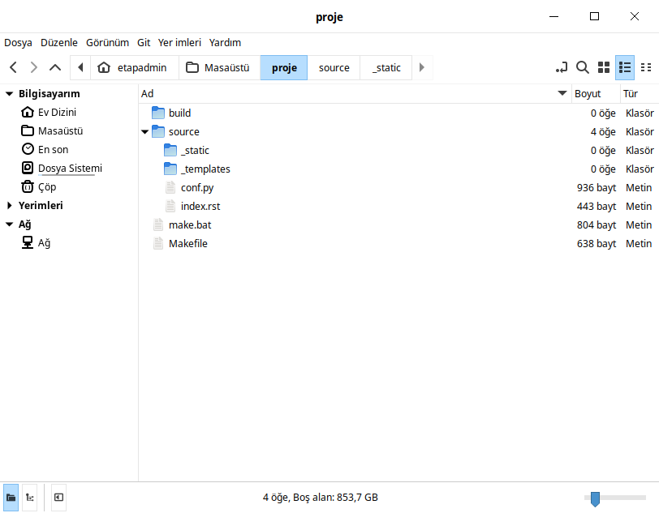
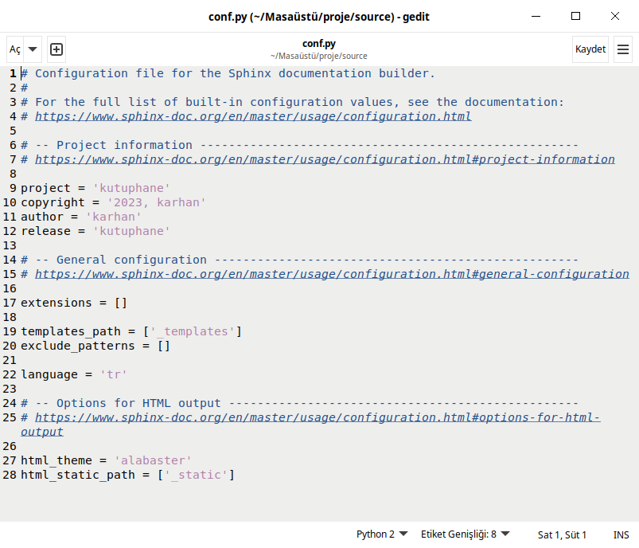

Belgelendirme Aracı¶
Sphinx, Python programcıları için popüler bir belgelendirme aracıdır. Sphinx, belgelerinizi otomatik olarak oluşturmanıza ve yönetmenize yardımcı olan bir dokümantasyon aracıdır. Sphinx, belgelerinizi Markdown veya reStructuredText formatında yazmanıza olanak tanır ve ardından bu belgeleri HTML, PDF, EPUB ve diğer formatlara dönüştürür.
Sphinx, Python projeleri için özellikle kullanışlıdır çünkü Python'un docstring formatını destekler. Bu, Python kodunuzun içine yerleştirilen belge dizelerini kullanarak otomatik olarak belgeler oluşturmanızı sağlar. Sphinx ayrıca, belgelerinizi özelleştirmenize ve stilize etmenize olanak tanıyan bir dizi tema ve eklenti sunar.
Nasıl Kullanılır?¶
Sphinx'i kullanmak için aşağıdaki adımları izleyebilirsiniz:
Sphinx'i yükleyin:¶
pip install sphinx
#or
sudo apt install python3-sphinx
Proje Oluşturma:¶
Projeye uygun bir dizin açalım. Dizin içinde terminali açalım.
sphinx-quickstart #komutunu çalıştıralım.
{kind=link}
Bu komut sonrasında proje ile ilgili tanımlamaları soracaktır. İşlemleri tamamladığımızda bize ayar dosyalarını oluşturacaktır.
 {kind=link}
{kind=link}
- Belge dosyalarınızı oluşturun veya mevcut belgelerinizi Sphinx formatına dönüştürün.
Belge dosyalarınızı düzenleyin ve içeriğinizi ekleyin.
Belgeyi oluşturun:¶
make html #rst formatındaki dosyaları html olarak oluşturuyor.
#veya
make pdf #rst formatındaki dosyaları pdf olarak oluşturuyor.
{kind=link}
{kind=link}
Oluşturulan belgeleri kontrol edin ve dağıtım için hazır hale getirin. Sphinx, Python projelerinizin belgelerini oluşturmanın kolay ve etkili bir yoludur. Hem geliştiriciler hem de kullanıcılar için daha iyi bir belge deneyimi sağlar. Sphinx hakkında daha fazla bilgi için Sphinx'in resmi belgelerine göz atabilirsiniz.